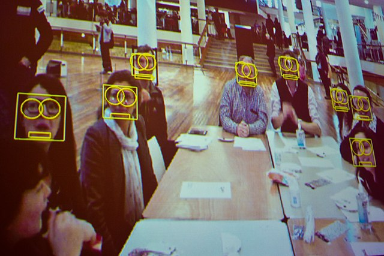
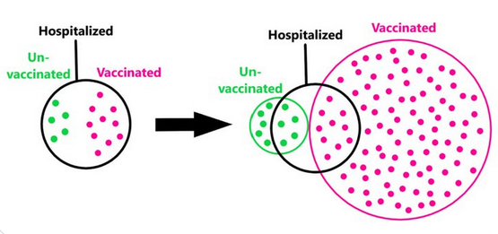

Suppose someone tries to sell a fraud detection system for your online retail company. They visit and make a presentation, claiming that the system has an accuracy of 99%. Seeing the excitement in your boss’ eyes, they continue: “If the alarm goes off, you can be 99% sure that it is a fraud!”
You startle where you sit. That’s not right. An accuracy of 99% means that the system identifies fraud and non-fraud cases correctly 99% of the time. It also means that 1% of the time, it misses a fraud case (a false negative) or accuses an innocent transaction of fraud (a false positive). It does not mean that the transaction is almost certainly a fraud when it returns a positive result.
Here’s how:
Let’s assume both frauds and innocents are identified correctly 99% of the time. Consider a set of 100,000 transactions. You know that in your line of work, fraud occurs at a rate of less than 0.1%, or one in a thousand. So, there should be about 100 fraudulent transactions in this set and 99,900 genuine transactions.
Suppose you apply this fraud test to every one of these transactions. Since it identifies correctly about 99% of the time, you expect it to catch 99 of the frauds and miss one. Similarly, it will correctly recognize 98,901 transactions (99% of 99,900) as genuine but label 999 of them falsely as fraudulent.
In other words, the test goes off for 99+999=1098 of these transactions, of which only 99 are actually fraudulent. This means that the red flag of this fraud detection system is correct only 9% of the time and far from the 99% claimed by the speaker.
The word “fallacy” indicates a flaw in reasoning, a thinking error. In this particular case, the flaw is the neglect of how rare a fraud is. The 99% accuracy of the system may look impressive. In fact, it does catch most of the cases. However, at the same time, it produces a lot of false alarms. In this case, about ten false alarms for every fraud.
Does this mean the system is useless? Far from it. Without the system, out of 1000 transactions, only one is known to be fraudulent. After running the system, the rate goes up to one in eleven. Maybe we can apply another test to this subset or examine them manually.
However, inflated claims about the system’s performance should be avoided unless the accuracy is increased to a much higher level.
You interrupt the speaker to tell all this. The response is, well, less than sympathetic. You turn to your boss. He shrugs. The next day, you get an email from him saying he bought the fraud detection system. You sigh and seek happiness in SQL queries.
In some cases, base rate neglect can lead to more disastrous consequences. Suppose the government announces a state-of-the-art face recognition system for identifying terrorists using public cameras. The government spokesman proudly announces that this national security system has 99.9% accuracy. “It will completely eradicate terrorism,” he continues.

However, dangerous as they are, terrorists are rare in the population. Suppose that there are 8,000 terrorists (likely an overestimation) among a nation of 80 million innocents. Imagine an experiment where the test is applied to the whole population, one person at a time.
Of the 8,000 terrorists, this experiment will catch 7,992 and miss 8. So far, so good. It almost certainly will eradicate terrorism. However, of the innocent 80 million, 80,000 will be falsely accused of being a terrorist—ten times as many as actual terrorists.
Even though the math is identical, the two problems we have seen are psychologically and politically very different. We can manually inspect the transactions without ruining anybody’s life in the fraud detection problem. However, terrorism accusations will have dire consequences. It might cause witch hunts or lead to the destruction of democratic rights. The advanced face recognition system would not only eradicate terrorism; it would also jeopardize freedom.
Data science is never a detached, purely technical occupation. Like everything in life, it has social and political ramifications that should be carefully pondered.
The base-rate neglect fallacy can also be observed in some discussions surrounding COVID-19 vaccines. Some point out that, among people hospitalized for COVID-19, there is a higher number of vaccinated people than unvaccinated. They claim that vaccines should be doing more harm than good based on this.
This argument might look convincing at first sight, but a moment’s reflection shows that it is another form of base-rate neglect but in reverse. Now the effect is dominated by the larger population rather than the smaller one.
This is best illustrated with the following diagram, created by Marc Rumilly.

For discussion’s sake, suppose we have 15 people hospitalized for COVID-19, five unvaccinated, and ten vaccinated. This is shown on the left part of the diagram. There is the big picture on the right that shows us the base rates. There are one hundred vaccinated people and just ten unvaccinated ones. So, while just 10% of vaccinated people are hospitalized, a whopping 50% of unvaccinated people end up in hospital. (These are not actual data, but the reality is close to them, as Rumilly’s analysis shows.)
As an aside, it is observed that the unvaccinated are always in the majority in intensive-care units, whether we consider base rate or not. A fair comparison should also take this into account.
The diagram on the left is about the question, “What is the ratio of vaccinated people among the hospitalized?” However, we are mainly interested in the reversed question, “What is the hospitalization ratio if vaccinated or not?” For this, we need to consult the second diagram involving base rates. The fallacy in base rate neglect stems from that kind of confusion in variables.
(This post was first published in Kavaken company blog on Nov 30, 2021.)